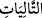

Yahut toplanıp sürülenlere layık olacak şekilde ulvî ve süflî cisimlerden sevk ve
idareleri kendilerine bağlı olan şeyleri toplayıp sürenler demektir. Kulları masiyet
işlemekten, şeytanı vesvese verip ifsat etmekten ve yakında geleceği üzere kulak
hırsızlığı yapmaktan men etmek de hep bu cümledendir. Bazıları der ki, bunlar bulutları
toplayıp süren ve yağmur yağmayan beldeye sevk eden meleklerdir.
“zikir okuyanlara” “
” kelimesi “
” kelimesinin mefûlüdür. Önceki âyetlerde
geçen “
” ve “
” kelimeleri ise öncesini te’kid eden mastarlar, yani mefûlü
mutlaktırlar. Güzel, saf ve etkili bir toplama ve sürme demektir. Yani Allah’ın
âyetlerinden ve peygamberlere indirilmiş olan kitaplardan ve diğerlerinden tesbih,
takdis, tahmid ve temcid gibi şânı yüce zikirleri okuyanlar demektir.
Yahut bu zikredilenlerden murad, ilmiyle âmil olan âlimlerin nefisleridir. Bu nefisler,
namazda cemaatle birlikte saf tutup vaaz ve nasihatlerle insanları kötülüklerden men
ederler, Allah’ın âyetlerini, şeriat ve ahkâmını okurlar. Yahut bunlar harp
meydanlarında kenetlenmiş bir yapı gibi saf tutan gazi birlikleridir. Yahut bunlar
komutanlarının saf tuttuğu birliklerdir. Bunlar cihad için atları sevk ederler. Düşmanları
da harp meydanından kovarlar. Bu esnada Allah’ın âyetlerini, zikir ve tesbihleri okurlar.
Düşmanla karşılaşmak onları zikirden alıkoymaz. Çünkü onların Allah ile olan
müşâhede ve huzurları tamdır. Hadis-i şerifte şöyle buyrulmuştur: “Allah üç sesle
meleklere karşı övünür. Bunlar; ezan sesi, Allah yolunda getirilen tekbir sesi ve
yüksek sesle getirilen lebbeyk ( telbiye) sesidir.”[197]
Yahut bunlar cemaatle namazın edası esnasında saf tutan âbidlerin nefisleridir. Bunlar
“kovulmuş şeytanın şerrinden Allah’a sığınırım
(
)” diyerek şeytanları kovanlardır. Sonra da Kur’ân okuyanlardır.
Denilir ki, burada “zikir okuyanlar”dan maksat, Kur’ân okuyan çocuklardır. Kuşkusuz
Allah Teâlâ şu dört şey göğe yükseldiği sürece insanlara azap etmez; azabı onlardan
çevirir. Bunlardan ilki müezzinlerin ezanı, ikincisi mücâhidlerin tekbirleri, üçüncüsü
hac yahut umre için ihrama girenlerin telbiyesi ve dördüncüsü ise Kur’ân okuyan
çocukların sesidir. Te’vîlât sahibi der ki: “Hak Teâlâ tevhid yolunun sâliklerinin
nefislerine yemin etmiştir. Onlar müşâhede makamında saf tutmuş, şeytânî sebepleri ve
nefsânî şehvetleri meşgul oldukları lisanî, kalbî ve rûhî zikir çeşitleriyle men
etmişlerdir.”
et-Te’vîlâtü’n-Necmiyye’de der ki: “Saf saf dizilmişlere” ifadesi ruhların saflarına
işaret eder. Haberde şöyle gelmiştir: Ruhlar bedenlerden önce yaratılınca dört saf
oldular. Birinci saf nebi ve resûllerin safıdır. İkincisi evliya ve seçkin kulların safıdır.
Üçüncüsü mü’minlerin ve Müslümanların safıdır. Dördüncüsü ise kâfirlerin ve
münafıkların safıdır. Burada “
” yani “toplayıp sürenler”, rabbanî ilhamlardır.
Bunlar, halkı günah ve yasaklardan men ederler. Has ve halis kulları, taatlarını
görmekten men eder; daha özel mukarreb kulları da hem dünyaya ve hem de ahirete
iltifat etmekten men ederler. “Zikir okuyanlar” ise Allah’ı çokça zikreden erkek ve